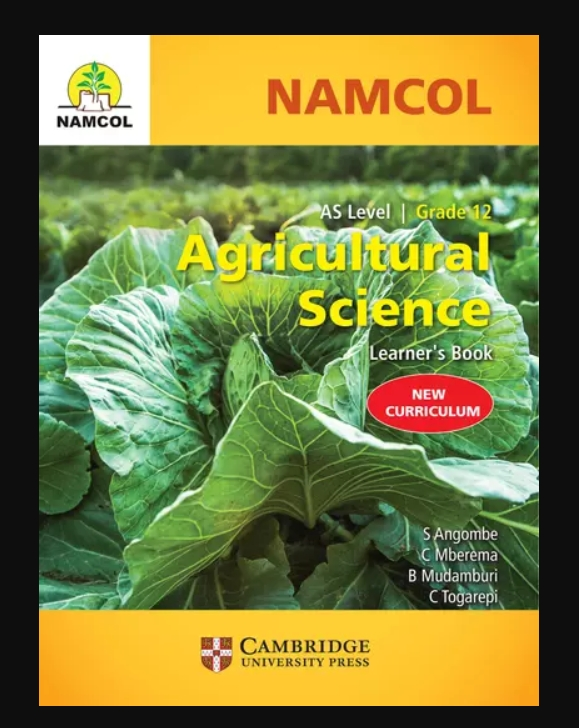

Student Tools
Explore Agricultural Science topics, find useful study materials and test your knowledge with the Quiz Arena.
Research Hub
Browse Agricultural Science topics by grade or search for a topic using the search box.
Grade 8 Agricultural Science
-
Grade 8
Introduction to Agriculture
Learn about agriculture and its importance to people, communities and the economy.
- Importance of agriculture
- Types of farming
- Farm resources
-
Grade 8
Soil
Understand soil as an important resource for agricultural production.
- Types of soil
- Soil properties
- Soil fertility
-
Grade 8
Crop Production
Learn the basic requirements for growing healthy crops.
- Seeds
- Planting
- Crop care
Grade 9 Agricultural Science
-
Grade 9
Crop Production
Explore crop growth and the practices used to improve agricultural production.
- Crop growth
- Weeds
- Pests and diseases
-
Grade 9
Livestock Production
Learn the basic principles of keeping farm animals.
- Types of livestock
- Animal housing
- Animal nutrition
-
Grade 9
Farm Management
Understand how farmers organise and manage their farm resources.
- Farm planning
- Farm records
- Farm resources
Grade 10 Agricultural Science
-
Grade 10
Soil Science
Study soil properties and how soil supports plant growth.
- Soil profile
- Soil texture
- Soil structure
- Soil conservation
-
Grade 10
Crop Production
Study crop production practices from planting to harvesting.
- Crop selection
- Planting methods
- Crop protection
- Harvesting
-
Grade 10
Animal Production
Learn about the management and production of farm animals.
- Animal nutrition
- Breeding
- Animal health
Grade 11 Agricultural Science
-
Grade 11
Sustainable Agriculture
Explore ways of producing food while protecting natural resources for future generations.
- Soil conservation
- Water conservation
- Environmental protection
-
Grade 11
Farm Economics
Understand basic economic principles used in agricultural production.
- Farm income
- Farm expenses
- Profit and loss
-
Grade 11
Agricultural Marketing
Learn how agricultural products move from the farmer to the consumer.
- Markets
- Pricing
- Value addition
Grade 12 / AS Agricultural Science
-
Grade 12 / AS
Crop Science
Study advanced crop production principles and factors affecting crop performance.
- Crop improvement
- Plant nutrition
- Crop protection
- Crop management
-
Grade 12 / AS
Animal Science
Explore animal production, nutrition, breeding and health.
- Animal nutrition
- Animal breeding
- Animal health
- Livestock management
-
Grade 12 / AS
Agricultural Economics
Understand economic decision-making in agricultural production.
- Production costs
- Farm budgeting
- Marketing
- Farm profitability
Study Materials
Use these resources to support your Agricultural Science revision and research.

Solid Foundations Agricultural Science Grade 8
A learner's textbook for Agricultural Science Grade 8.
Find this book
Solid Foundations Agricultural Science Grades 10 & 11
A learner resource for Agricultural Science at NSSCO level.
Find this book
Cambridge International AS & A Level Agriculture
A useful resource for learners studying Agriculture at AS and A Level.
Find Cambridge resourcesVisit your school or local library for Agricultural Science textbooks, past papers and other learning materials.
-
Agricultural Science Textbooks
Use your prescribed Agricultural Science textbook to review class notes, diagrams and practical agricultural concepts.
-
School and Public Libraries
Libraries can provide access to textbooks, reference books, past examination papers and other educational resources.
-
Online Agricultural Resources
Use reliable educational websites and online agricultural resources to research topics and learn more about farming.
Quiz Arena
Test your knowledge of Agricultural Science with twelve questions covering important topics.
Question
Quiz complete!
Well done!